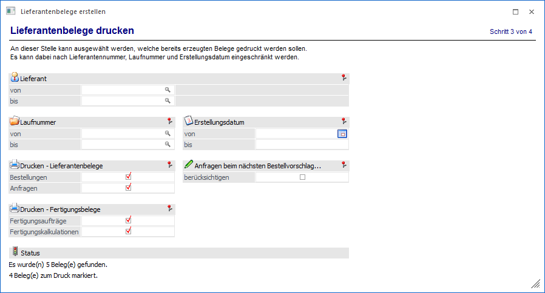
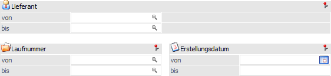
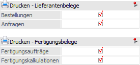
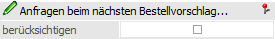
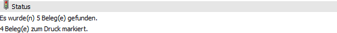

In dem Bereich "Lieferantenbelege drucken" kann ausgewählt werden, welche bereits erzeugten Belege als Anfrage bzw. Bestellung im Anschluss gedruckt werden sollen.
Hinweis
Es werden grundsätzlich nur jene nicht gerechnete / gedruckte Belege berücksichtigt, welche über das Programm "Lieferantenbelege erstellen" erzeugt wurden.

Folgende Einschränkungen können an dieser Stelle vorgenommen werden:
Selektion

Ø Lieferant von / bis
An dieser Stelle kann eine Eingrenzung auf die Lieferanten vorgenommen werden.
Ø Laufnummer von / bis
Mit Hilfe dieser Eingabefelder kann auf die bereits existierenden Laufnummern (nicht gerechnet / gedruckte Belege) eingeschränkt werden.
Ø Erstellungsdatum von / bis
Hier kann eine Selektion auf das Erstellungsdatum der bereits bestehenden nicht gerechneten / gedruckten Belege erfolgen.

Die hier getroffenen Einstellungen werden benutzerspezifisch gespeichert.
Ø Drucken - Lieferantenbelege
Durch Aktivieren der entsprechenden Optionen kann festgelegt werden, ob Lieferantenbestellungen und / oder Lieferantenanfragen gedruckt werden sollen.
Ø Drucken - Fertigungsbelege
Durch Aktivieren der entsprechenden Optionen kann festgelegt werden, ob Fertigungsaufträge und / oder Fertigungskalkulationen gedruckt werden sollen.
Anfragen beim nächsten Bestellvorschlag…

Die hier getroffene Einstellung wird benutzerspezifisch gespeichert.
Ø Anfragen beim nächsten Bestellvorschlag berücksichtigen
Wurde der Druck von "Anfragen" aktiviert, so steht diese Option zur Verfügung. Hierüber kann definiert werden wie mit den Dispositionszeilen der Anfragen verfahren werden soll.
ü Option "aktiviert"
Nach dem
Druck der Lieferantenanfragen werden die Dispositionszeilen gelöscht, d.h. bei
dem nächsten Bestellvorschlag wird der Artikel (bzw. die angefragte Menge)
wieder ausgegeben.
ü Option "deaktiviert"
Nach dem
Druck der Lieferantenanfragen bleiben die Dispositionszeilen erhalten, d.h. der
Artikel (bzw. die angefragte Menge) würde beim nächsten Bestellvorschlag nicht
berücksichtigt werden.
Status

Ø Status
Im unteren Bildschirmbereich wird die Anzahl der Belege angezeigt, die durch die Selektion ausgewählt wurden.